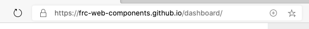
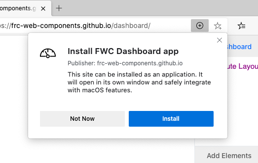
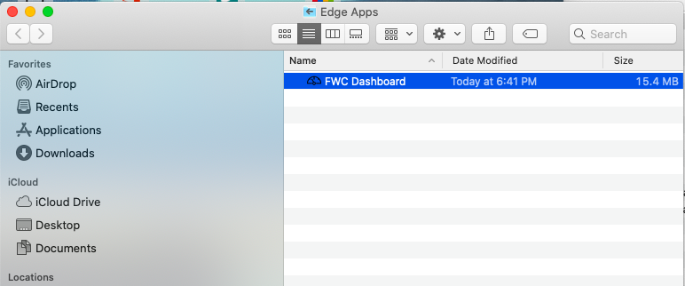
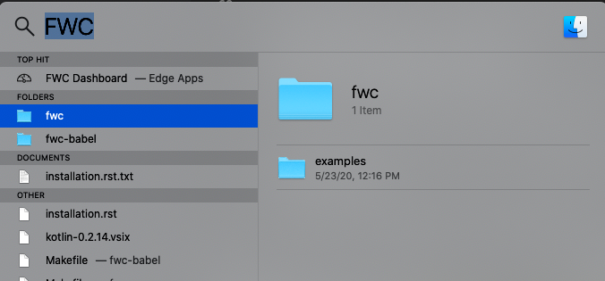
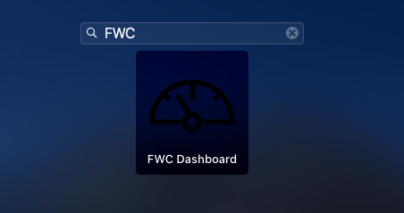
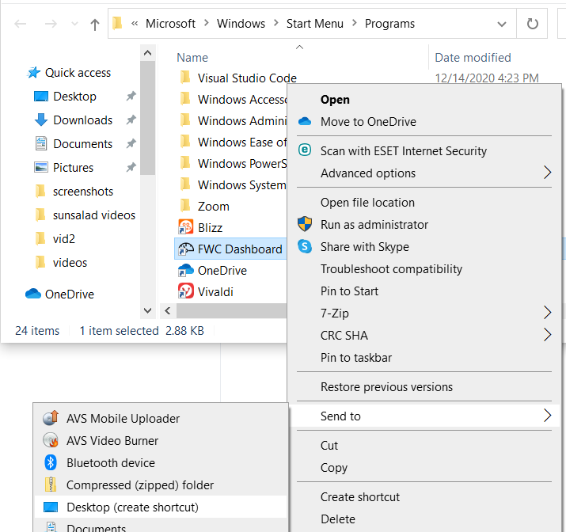
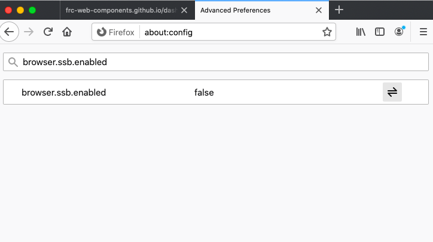
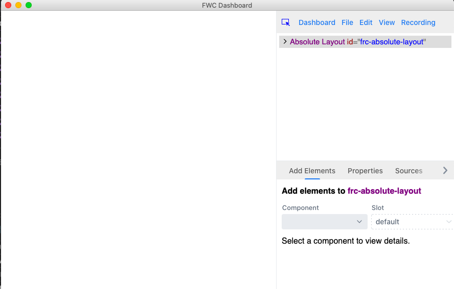
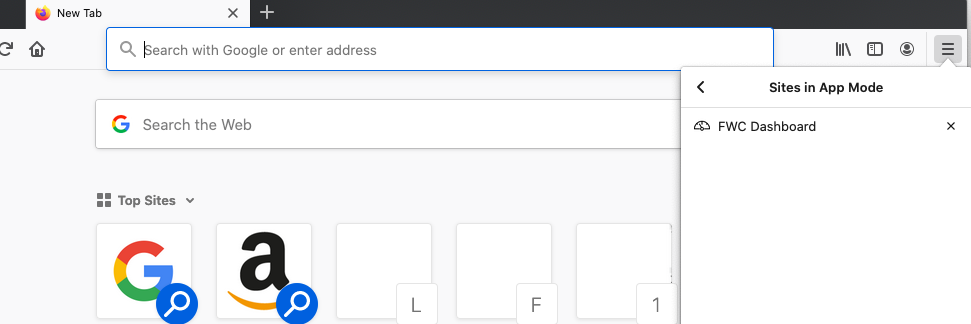

Installation¶
The FRC Web Component Dashboard is a web app that can installed to your computer for offline use (necessary when competing in FRC matches where internet access in unavailable) and be updated when newer versions and an internet connection become available.
The dashboard can be installed from here: https://frc-web-components.github.io/dashboard/
Installation steps differ slightly between each browser and operating system:
Chrome¶
You should see something like this when you visit the dashboard page in chrome:

You should see a plus button on the right side of the address bar:

Click it and a dialog to install the app should appear:

On macs the app should now be installed in the “Chrome Apps” folder:

You can then launch it from the “Chrome Apps” folder or by searching for “FWC Dashboard” using Splotlight:

or by searching for it using the Launchpad:

On windows the app should be installed in the “Chrome Apps” folder as well:

You can then launch it from the “Chrome Apps” folder or by searching for “FWC Dashboard” in the searchbar:

You can also create a shortcut of the app and launch it from your desktop:

Edge¶
You should see something like this when you visit the dashboard page in edge:

You should see a plus button on the right side of the address bar:
Click it and a dialog to install the app should appear:
On macs the app should now be installed in the “Edge Apps” folder:
You can then launch it from the “Edge Apps” folder or by searching for “FWC Dashboard” using Splotlight:
or by searching for it using the Launchpad:
On windows the app should be installed in the “Programs” folder:

You can then launch it from the “Programs” folder or by searching for “FWC Dashboard” in the searchbar:

You can also create a shortcut of the app and launch it from your desktop:
Firefox¶
Installing PWAs must be enabled before installing the dashboard using firefox.
To enable, first go to about:config in the address bar:

Click the “Accept the Risk and Continue” button. You should be presented with a search bar to search preferences:

Enter browser.ssb.enabled into the search bar. You should now see this:
Click the toggle button on the right and the value should now read true:

Restart firefox and visit the dashboard page here: https://frc-web-components.github.io/dashboard/. You should now see something that looks like this:

In the address bar, click on the “page actions” button (the icon with three dots). Click on the “Use This Site in App Mode” menu item:

The dashboard should now be launched in its own window:
The dashboard can now be accessed offline from the firefox hamburger menu:

Click on the “Sites in App Mode” menu item and you should see “FWC Dashboard” listed:
Click on this and the dashboard will launch.
Safari¶
PWAs currently can’t be installed using Safari on desktop computers.